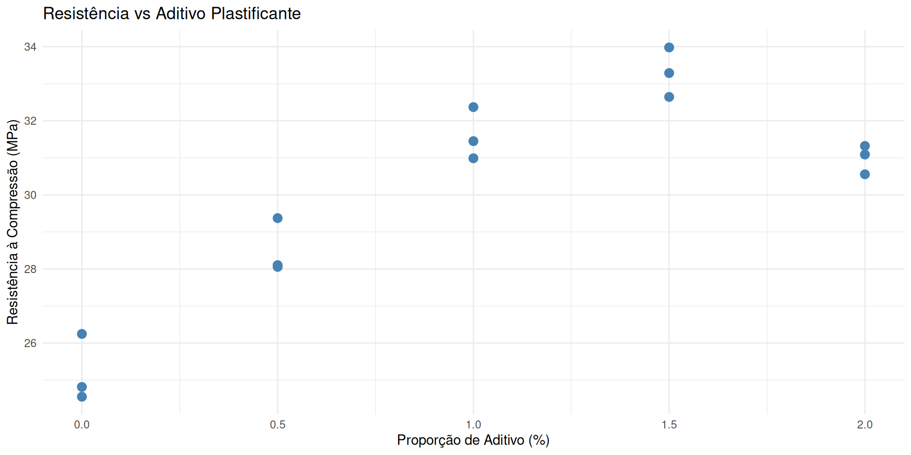
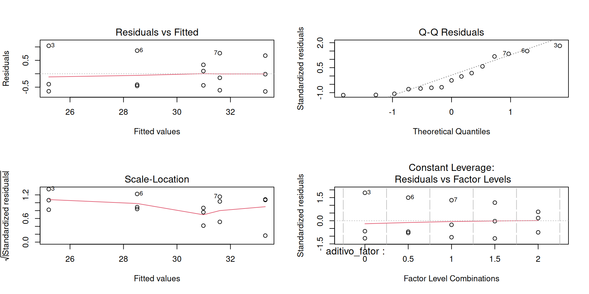
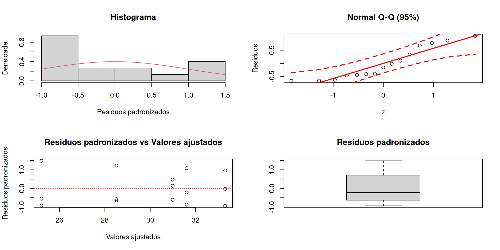
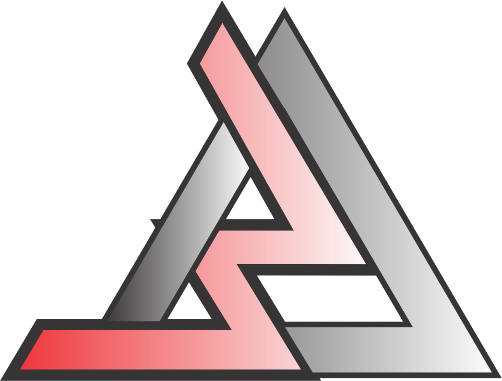

| Resistência à Compressão do Concreto por Proporção de Aditivo | |||
|---|---|---|---|
| DIC com 5 níveis e 3 repetições | |||
| Proporção de Aditivo (%) | Repetição 1 | Repetição 2 | Repetição 3 |
| 0.0 | 24.55 | 24.82 | 26.25 |
| 0.5 | 28.06 | 28.10 | 29.37 |
| 1.0 | 32.37 | 30.99 | 31.45 |
| 1.5 | 32.64 | 33.98 | 33.29 |
| 2.0 | 31.32 | 31.09 | 30.56 |
Estatística Experimental
Aula 16 | Análise de regressão na ANAVA
Filosofia de publicação (Selo DC)

Livro de Apoio
Usaremos Batista (2025):
Objetivos da Aula
- Relacionar ANAVA e modelos de regressão
- Aplicar regressão linear e polinomial a dados com fator quantitativo
- Interpretar os coeficientes do modelo
- Avaliar a adequação do modelo por meio dos resíduos
Quando usar regressão na ANAVA?
- Quando o fator da ANOVA é quantitativo, pode-se usar regressão para:
- Modelar tendência da variável resposta
- Testar significância da relação
- Otimizar resultados (por exemplo, ponto ótimo)
Exemplo: Engenharia Civil
Um engenheiro civil testou diferentes proporções de aditivo plastificante (0%, 0.5%, 1.0%, 1.5% e 2.0%) na mistura de concreto. A resistência à compressão (em MPa) foi registrada após 28 dias.
Dados do experimento
Gráfico exploratório
Verificação da ANAVA
Análise de Resíduo
Análise de Resíduo
Análise de Resíduo
- Homogeneidade
Bartlett test of homogeneity of variances
data: resistencia by aditivo
Bartlett's K-squared = 1.088, df = 4, p-value = 0.8962- Independência
Regressão na ANAVA (Errado)
Call:
lm(formula = resistencia ~ aditivo, data = dados)
Residuals:
Min 1Q Median 3Q Max
-2.6385 -1.8537 -0.1825 1.3074 2.4468
Coefficients:
Estimate Std. Error t value Pr(>|t|)
(Intercept) 26.6500 0.8189 32.542 7.64e-14 ***
aditivo 3.2719 0.6687 4.893 0.000294 ***
---
Signif. codes: 0 '***' 0.001 '**' 0.01 '*' 0.05 '.' 0.1 ' ' 1
Residual standard error: 1.831 on 13 degrees of freedom
Multiple R-squared: 0.6481, Adjusted R-squared: 0.621
F-statistic: 23.94 on 1 and 13 DF, p-value: 0.0002936Regressão na ANAVA (Correto)
library(ExpDes.pt)
# Anava no DIC
reganava <- dic(trat = dados$aditivo, resp = dados$resistencia,
quali = FALSE) # Fator quantitativo------------------------------------------------------------------------
Quadro da analise de variancia
------------------------------------------------------------------------
GL SQ QM Fc Pr>Fc
Tratamento 4 118.917 29.7292 59.859 6.0064e-07
Residuo 10 4.967 0.4967
Total 14 123.884
------------------------------------------------------------------------
CV = 2.36 %
------------------------------------------------------------------------
Teste de normalidade dos residuos ( Shapiro-Wilk )
Valor-p: 0.05975596
De acordo com o teste de Shapiro-Wilk a 5% de significancia, os residuos podem ser considerados normais.
------------------------------------------------------------------------
------------------------------------------------------------------------
Teste de homogeneidade de variancia
valor-p: 0.8961704
De acordo com o teste de bartlett a 5% de significancia, as variancias podem ser consideradas homogeneas.
------------------------------------------------------------------------
Ajuste de modelos polinomiais de regressao
------------------------------------------------------------------------
Modelo Linear
=========================================
Estimativa Erro.padrao tc valor.p
-----------------------------------------
b0 26.6500 0.3152 84.5577 0
b1 3.2719 0.2573 12.7146 0
-----------------------------------------
R2 do modelo linear
--------
0.675185
--------
Analise de variancia do modelo linear
======================================================
GL SQ QM Fc valor.p
------------------------------------------------------
Efeito linear 1 80.2909 80.2909 161.66 0
Desvios de Regressao 3 38.6260 12.8753 25.92 5e-05
Residuos 10 4.9666 0.4967
------------------------------------------------------
------------------------------------------------------------------------
Modelo quadratico
=========================================
Estimativa Erro.padrao tc valor.p
-----------------------------------------
b0 24.8453 0.3829 64.8827 0
b1 10.4908 0.9072 11.5638 0
b2 -3.6094 0.4350 -8.2980 0.00001
-----------------------------------------
R2 do modelo quadratico
--------
0.962767
--------
Analise de variancia do modelo quadratico
======================================================
GL SQ QM Fc valor.p
------------------------------------------------------
Efeito linear 1 80.2909 80.2909 161.66 0
Efeito quadratico 1 34.1984 34.1984 68.86 1e-05
Desvios de Regressao 2 4.4276 2.2138 4.46 0.0413
Residuos 10 4.9666 0.4967
------------------------------------------------------
------------------------------------------------------------------------
Modelo cubico
=========================================
Estimativa Erro.padrao tc valor.p
-----------------------------------------
b0 25.2255 0.4040 62.4448 0
b1 5.0406 2.0553 2.4525 0.0341
b2 3.9955 2.6098 1.5309 0.1568
b3 -2.5350 0.8578 -2.9553 0.0144
-----------------------------------------
R2 do modelo cubico
--------
0.999243
--------
Analise de variancia do modelo cubico
======================================================
GL SQ QM Fc valor.p
------------------------------------------------------
Efeito linear 1 80.2909 80.2909 161.66 0
Efeito quadratico 1 34.1984 34.1984 68.86 1e-05
Efeito cubico 1 4.3376 4.3376 8.73 0.0144
Desvios de Regressao 1 0.0900 0.0900 0.18 0.67933
Residuos 10 4.9666 0.4967
------------------------------------------------------
------------------------------------------------------------------------Análise de resíduo
Gráfico da curva ajustada
ggplot(dados, aes(x = aditivo, y = resistencia)) +
geom_point(size = 3, color = "darkblue") +
stat_smooth(method = "lm", formula = y ~ poly(x, 3, raw = TRUE),
se = FALSE, color = "darkgreen") +
labs(title = "Resistência do Concreto vs Aditivo (DIC)",
x = "Proporção de Aditivo (%)",
y = "Resistência (MPa)") +
theme_minimal()Escolha do modelo
- Análise de Resíduos
- Coeficiente de determinação
- Desvio de regressão
- Coeficiente de determinação ajustado (\(R^2_{aj}\))
- Parcimônia do modelo
- Significância dos estimadores do modelo
Coeficiente de determinação ajustado
\[ R^2_{ajustado} = 1 - \left( \frac{(1 - R^2)(n - 1)}{n - p - 1} \right) \]
Onde:
- \(R^2\) é o coeficiente de determinação (não ajustado);
- \(n\) é o número total de observações;
- \(p\) é o número de variáveis explicativas no modelo (excluindo o intercepto).
Coeficiente de determinação ajustado
# Funcao para o R2aj
r2aj <- function(r2, n, p) {
1 - (1 - r2) * (n - 1) / (n - p - 1)
}
# Modelo
Modelo <- 1:3
# R2
r2 <- c(reganava$reg$`R2 reta`, reganava$reg$`R2 parabola`, reganava$reg$`R2 cubica`)
# Coeficiente de determinacao ajustado
Coef.aj <- r2aj(r2, 15, Modelo)
# Resultado
data.frame(Modelo, Coef.aj, r2) Modelo Coef.aj r2
1 1 0.6501989 0.6751847
2 2 0.9565618 0.9627673
3 3 0.9990366 0.9992430Questões?
Próximas aulas

Referências
BATISTA, B. D. O. PLanejamento e Análise de Experimentos. Ouro Branco, MG, Brasil: [s.n.], 2025.